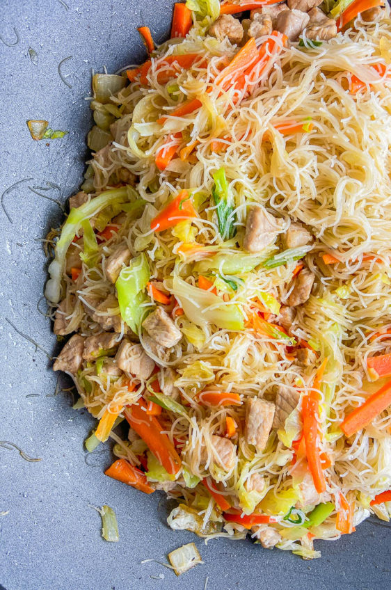

Original by: Des Kazda
A small bit from our trustworthy friend, ChatGPT: Pancit is a quintessential Filipino noodle dish with a rich history influenced by Chinese cuisine. The term "pancit" derives from the Hokkien word "pian i sit," meaning "something conveniently cooked." Introduced by Chinese immigrants, pancit quickly became a staple in the Philippines, with numerous regional variations reflecting the country's diverse culinary landscape. Common types include Pancit Canton, made with egg noodles and stir-fried with vegetables, meat, and seafood, and Pancit Malabon, known for its thick rice noodles and flavorful shrimp-based sauce. Pancit is often served during celebrations and gatherings, symbolizing long life and prosperity, making it a beloved and integral part of Filipino food culture.